コピーがほぼ無料な世界で、何かが「減る」ように見せる
スマートフォンで友人に写真を送るとき、あなたは自分の端末から写真を「渡して」いない。コピーが相手へ増え、手元のファイルはそのまま残る。音楽ファイルも、スライド資料も、ほぼあらゆるデジタルオブジェクトも同じである。送信は複製であり、複製の限界費用は実質ゼロに近い。
それなら、画面に「0.05 BTC を送った」と出た瞬間、なぜそれが現金の受け渡しに近い出来事だと言えるのか。銀行の窓口係も、店舗の金庫も、署名した紙の領収書も、プロトコルの画面には出てこない。出てくるのは文字列と数字と、少し待って消えるローディング表示だけである。
多くの解説はここで「ブロックチェーンがあるから」と答えて止まる。しかしラベルはメカニズムではない。現金が現金である理由は、紙の質感ではなく、同じ紙幣を二人に同時に渡せないことにある。デジタルで同じことを言うには、複製可能という物理に逆らう共有状態が要る。この記事はその共有状態の中身を、急がずに分解する。
もう一つ先に断りたい。Bitcoinを「必ず上がる資産」と読む議論は市場では熱いが、本稿の足場ではない。先に置くのは、お金が価値保存として何を要求してきたか——そして兌換の錨が外れたあと、なぜ検証可能な供給制約が語られうるか——という性質の話である。価格予言ではなく、発行と改訂を誰がどう検証するかの話だ。
私にとって最も奇妙な点はここにある。Bitcoinが証明しようとしているのは「魔法の価値」でも「必ず上がる資産」でもない。データが好き放題コピーできる物理的現実の中で、同じ単位を二人に同時に使わせないための、公開された手続きである。価格チャートはその上に重ねられた市場の物語であり、プロトコル本体の説明ではない。
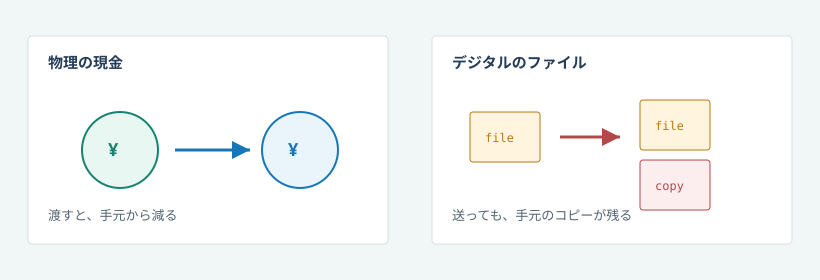
日常ではすでに、三つの裂け目に触れているはずだ。ウォレットの復元画面でシードの順番が合わないと、アプリは淡々と「無効なチェックサム」とだけ言う。サポート窓口はない。銀行なら本人確認の書類を求められるが、Bitcoinプロトコルには「本人」という概念がない。鍵を失えば、その鍵に紐づく残高は誰のものにもならない。
別の場面。取引所アプリに「残高 0.42 BTC」と表示されている。送金は「処理中」のまま。友人は「まだ届いていない」と言う。画面の数字は会社の内部帳簿上の負債（IOU）であることが多い。あなたが秘密鍵を持っているわけではない。
三つ目。高額の支払いを受け取った相手が「6確認待ってから商品を渡す」と言う。あなたは取引所の「反映済み」で安心したが、相手は別の時計を見ている。確定は感覚ではなく、累積した作業コストの話である。
これらは投資の成否ではない。主権・委任・確定という、システム設計の切れ目である。この記事は、その切れ目に長く滞留しながら、再構築可能なメカニズムへ分解する。
ここから先は、価値保存の歴史を一度噛み、そのうえで台帳係なしに「同じコインを二度使えない」と言える理由を、制約が次の発明を強制する順で歩く。価格予測や売買助言、Lightning やサイドチェーンの詳細、Script のオペコード一覧には入らない——それらはこの足場の上に後から載る応用である。
銀行は「価値」ではなく、台帳係である
オンラインでお金が動く、と聞いた瞬間に多くの人が想像するのは、どこか遠くのサーバに「あなたの残高」が書かれていて、会社がそれを正しい順序で書き換える光景である。実際、古典的な電子決済はほぼそれである。PayPal も、クレジットカードも、銀行送金も、最終的には権限のある組織が内部状態を更新し、紛争があればその組織（と法制度）が裁定する。
この設計は強力だ。利用者は鍵管理を考えなくてよい。パスワードを忘れたら窓口がある。不正利用があればチャージバックがある。欠点は対称的である。あなたは会社を信じなければならず、会社はあなたの利用を止められ、規制当局はその会社に圧力をかけられる。残高とは、しばしば「その会社に対する債権」の別名である。
だから「銀行がない」は浪漫ではなく、機能のトレードオフである。救済と不可逆性は同時に最大化しにくい。チャージバックがある世界は売り手にリスクを寄せ、不可逆な電子現金は買い手に注意を強いる。Bitcoinは後者側の設計選択をする。どちらが道徳的に正しいかではなく、どの失敗モードを引き受けるかの選択である。
現代人が日常で触れる「デジタルの金」のほとんどは前者である。給与、クレカ、残高表示のアプリ。そこでは会社が台帳係であり、アプリの数字はしばしば内部状態の鏡像に過ぎない。Bitcoinの奇抜さは、同じスクリーン上に見えても、それが委任の鏡なのか、鍵で検証可能な状態なのかを、利用者自身が区別しなければならない点にある。
電子現金の長年の夢は、この台帳係を必須としないことだった。物理の現金は、中央データベースなしで手から手へ移る。デジタルでも同じことをしたい——ただし、複製無料という物理法則に逆らう必要がある。
信頼最小化とは「誰も信じなくてよい」ではない。信じる対象を、特定企業の内部帳簿から、公開された規則と検証可能なコストへ移すことである。
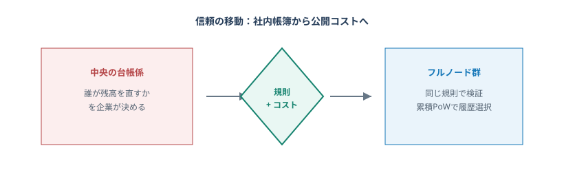
ただし、委任を外す動機は「決済の不便」だけではない。人々がなお貨幣に求める宿題——購買力を時間を超えて運ぶこと——は、台帳係の話より古く、法定通貨の便利さだけでは閉じない。次節ではその宿題を、貝殻と金と1971年の転換を通して一度整理してから、電子現金の部品史へ入る。
価値の保存という宿題：貝殻から法定通貨、そしてデジタル希少性へ
前節で見たように、現代の決済の大半は台帳係への委任である。しかし「だから電子現金が要る」と言う前に、もう一段古い問いがある。すでに円やドルがあるのに、なぜ敢えて別の貨幣性を探すのか。答えは支払いの速さではなく、価値の保存——購買力を、十分に予測可能な形で未来へ持ち越せるか——に寄っている。
イングランド銀行の入門論考は、貨幣の役割を三つに分ける。価値の保存、計算単位、交換手段である。価値の保存とは、ある程度予測可能な仕方で時間が経っても価値を残すこと——何百年前に掘られた金や銀は今日なお価値を持ちうるが、腐る食料はそうではない、と彼らは対比する(*10)。交換手段は明日も使える見込みがあって初めて強くなる。実際、超インフレで従来通貨が価値保存として崩れると、人々は別の通貨で売買し始めることがある——第一次世界大戦後のドイツ・マルクはその古典例として挙げられている(*10)。
ここで重要なのはモラルではない。機能である。法定通貨は、計算単位と日常の交換手段として極めて強い。それは政策・法・ネットワーク効果が支える信頼の結晶だ。同時に現代貨幣の本体は、銀行預金を含む特殊な IOU（借用証書）である、と英中銀は述べる(*10)。IOUとしての強さは発行・決済制度への信頼に依存する。だから「法定通貨が使えている」ことと、「発行が裁量的でも購買力を長い間きれいに保存できる」ことは、同じ命題ではない。
貨幣の起源をたどると、価値保存は交換の傍ら役ではない、と読む論もある。Nick Szabo の Shelling Out は、貝殻・牙・家財といったコレクタブルが、現代マネー以前に「安全な形で体現された価値」の先駆になったと論じる(*11)。それは単なる装飾ではなく、安く増刷できないこと・耐久・携帯・査定しやすさといった、非法定貨幣と共有する属性を持っていた。供給が製造業によって一気に膨らめば（北米のワムパムがその例として語られる）、貨幣性は薄れ、装飾へ退化する——希少性の硬さは、歴史上はじめて「気分」ではなく製造コストの話だった(*11)。
そこから近代までの道は、おおざっぱにこう読める。実物や貴金属（供給膨張にコストがかかる）→ 兌換を約束した紙幣（持ち運びは紙、錨は金属側に残る）→ 兌換義務を外した法定通貨（政策の自由度が上がり、価値保存は制度への信用に寄る）。便利さは右へ進みやすい。失われやすいのは、発行体を信じなくても検査できる希少性である。
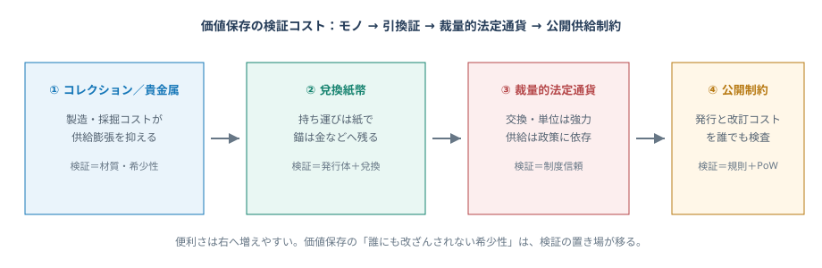
二十世紀の区切りとして、第二次世界大戦後のブレトン・ウッズ体制を置くと分かりやすい。多くの通貨はドルに（例外的に調整可能な形で）固定され、ドルは金一オンス＝35ドルという交換比率で金と結ばれていた(*12)。価値保存の最終的な錨は、なお金属側に残っていた——少なくとも公式の対外交換においては。1971年8月、インフレと金の取り付け懸念のなかで、ニクソン大統領はドルの金兌換を停止する。連邦準備制度史は、これにより国際通貨体制が実質的にフィアット（不換）へ転じ、ブレトン・ウッズの終わりの始まりになった、と要約する(*12)。
この転換を「悪役の物語」にすると誤解が増える。政策には景気・雇用・国際収支という別の制約がある。本稿が取りたいのはもっと狭い命題だ。価値保存の質が、商品の物理制約から、主権者の裁量と信用の維持能力へ、はっきりと移ったという構造変化である。円やドルが劣った道具だと言いたいのではない。それらは交換と計算単位として覇権的である。だが長期の購買力について「発行ルールを自分で検証できるか」と問うと、答えは制度文書と政治過程にあり、誰でも同じノード規則で監査できる公開台帳にはない。
Bitcoin がこの歴史に差し込むのは、「法定通貨を廃せ」というスローガンではない。複製無料のデジタル領域で、発行スケジュールと履歴改訂のコストを、発行体の好意ではなく公開手続きとして検査できる貨幣候補を作ることだ。約2100万枚の上限や半減は価格の予言ではなく、供給側の機械的制約である——需要・為替・購買力の結果は、なお市場と制度の外生変数だ（後節の限界でも繰り返す）。だが法定通貨側が一貫して委託してきた「希少性の最終裁定」を、検証可能なコストへ移そうとする設計である、とは言える。
ここが次の制約を生む。価値保存の候補であっても、それがデジタルの持ち運び可能な単位なら、同じ単位を二人に同時に渡せない手続きが要る。貝殻は物理的に一つしか渡せない。銀行預金は台帳係が順序を決める。Bitcoin がそのどちらでもなく電子現金を目指すなら、中央なしで二重支払いを抑える閉ループが要る——次節の電子現金史と、そのあとのメカニズム分解は、まさにこの宿題への応答である(*1)。
法定通貨が壊れているから Bitcoin が要る、ではない。法定通貨が交換と単位で強い世界のうえで、価値保存に「検証可能な供給制約」を足す選択肢が、デジタルではじめて開かれた——というのが本稿の主張である。
注意：価値保存の性質（発行・改訂をどう検証するか）と、資産の成績（将来の購買力や相場）は別物である。本稿は前者を歴史とメカニズムから説明する。売買助言や「法定通貨からの逃避」を煽る議論は範囲外である。
電子現金は、Bitcoinのずっと前から試みられていた
Bitcoinを突然の発明として読むと、「ブロックチェーン」というラベルだけが残る。実際の発明は積み重ねである。インターネット上でお金のようなものを動かそうとする試みは、少なくとも1980年代から続いている。部品はあった。欠けていたのは、部品が閉じた閉ループになる組立であった。
暗号学の歴史は、しばしば「強いプリミティブ」の発見として語られる。しかし電子現金では、強い署名があっても足りない。強いハッシュがあっても足りない。強い匿名化があっても足りない。必要なのは、開かれたネットワーク上で、状態の更新順序について高いコストなしには覆せない合意をつくることだ。合意にコストがないなら、偽の履歴は無料で増殖する。
だから Bitcoin を理解するには、2008年の論文だけを聖典化しても足りない。Hashcash の非対称コスト、b-money のような計算的通貨の構想、中央発行型電子現金の成功と失敗——それらが「何が欠けていたか」を教える。Satoshi の寄与は、空から降ってきた概念よりも、既存部品の配置を閉ループにした点に近い。
1980s–1990s · David Chaum
ブラインド署名などを用いた電子現金の構想と DigiCash は、プライバシー付きの電子決済を追求した。技術的には先駆的だったが、運用は中央発行体に依存した。発行体が止まれば、系も止まる——台帳係問題が形を変えて戻る。
1997–2002 · Adam Back · Hashcash
メールのスパム対策として提案された Hashcash は、送信側にハッシュ探索のコストを課し、受信側は安く検証できる非対称性を示した(*5)。後の Proof-of-Work の直接の血統である。「提案を高く、確認を安く」という非対称なしには、オープンなネットワークは偽身分に飲まれる。
1998 · Wei Dai · b-money / Nick Szabo · bit gold
Wei Dai の b-money は、暗号と計算コストに基づく分散的な電子通貨の構想を提示した。Bitcoin の論文は明示的にこの系譜を参照する(*1)(*8)。同時期の構想群は、「計算コストで希少性をつくる」という発想がすでに共有されていたことを示す。
2008–2009 · Satoshi Nakamoto
2008年10月の論文は、二重支払いを防ぐ peer-to-peer 電子現金として、署名・共通履歴・Proof-of-Work・最長（実務上は最大累積作業量）の鎖を一つのシステムに束ねた(*1)。2009年1月3日、genesis ブロックが刻まれる。
論文の導入部は率直である。商業上の電子決済はほとんど金融機関を信頼の要にしている一方、完全に不可逆な支払いには向かない。物理の現金は少額の対面取引ではその隙間を埋めるが、通信チャネル越しの同等物が欠けている——そこへ peer-to-peer の電子現金を置く、というのが宣言である(*1)。
重要なのは、各先行案が「欠けていたピース」を教えてくれることだ。中央発行体は便利だが単一障害点になる——だから発行体なしで状態を持つ必要が残る。ハッシュのコストだけあっても、誰が何を所有するかの状態表現がなければ現金にならない——だから UTXO のような共有状態が要る。署名だけあっても、同じコインを二度使うことを止められない——だから順序付き履歴が要る。履歴が無料で増殖するなら偽身分に飲まれる——だから検証可能な提案コストが要る。Bitcoin の新しさは、部品の発明そのものより、これらの不足が互いに埋め合って閉ループになる配置にある。
したがって次節からの歩き方は年表ではなく、失敗が次の制約を強制する順である。まず「同じコインを二人に払えない」とは何かを固定し、そこから伝播・指紋・所有・状態・束ね・検証範囲・コスト・インセンティブへと降りていく。
最初の問い：同じコインを二人に払えないとは、どういうことか
物理の現金は、渡せば手元から減る。デジタルの「コイン」は、送信しても手元のビット列が消えなくてもよい。受け手は常にこう疑う必要がある——同じ単位が、別の人にも同時に送られていないか。
これが二重支払い（double-spending）問題である。古典解は、信頼できる第三者が残高を管理することだ。Satoshi の提案は、この第三者を必須としない電子現金を求める(*1)。
ここで多くの誤解が始まる。デジタル署名は強力だが、それだけでは足りない。署名は「Aliceがこのメッセージを承認した」ことは示せる。しかし「Aliceがいまだその支払いを許す残高状態にある」ことは、グローバルな順序付きの状態を見なければ示せない。権限の証明と、状態の一意性は別物である。
映画のキーカードを想像してみるとよい。カードは「開ける権限」を示すが、ドアがいま施錠されているか、すでに誰かが通ったあとかは、ドア側の状態が知っていなければ判定できない。署名はキーカード、UTXO集合はドアの施錠状態、共有履歴はその施錠ログである。キーカードが本物でも、すでに開いて通行されたドアにもう一度「未使用」と言い張ることは許されない。
銀行がある世界では、この施錠ログを会社が持つ。Bitcoinはログを公開し、誰でも検証できるようにし、ログへの追記に検証可能な値段を付ける。二重支払い問題の答えは「良い人が運営する」ではなく、「同じ順序を検証可能なコストで強制する」である。
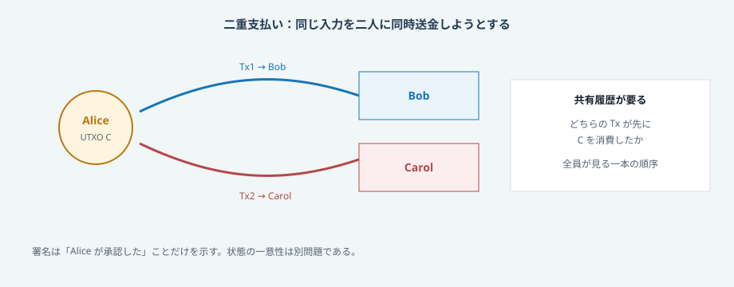
四つの役割は別物である
Lesson: 「ブロックチェーン」一語では、権限・状態・コスト・検証が潰れてしまう。
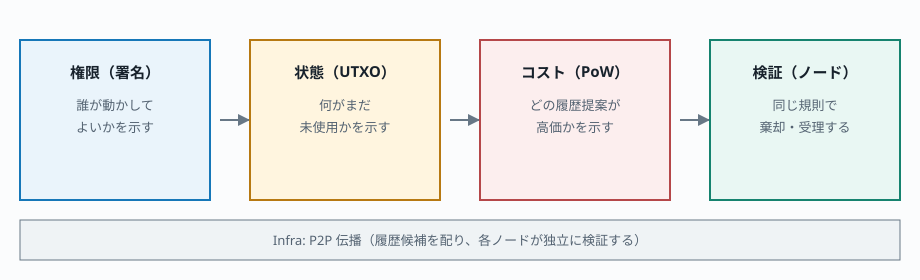
伝播の物理：なぜ「一時的に両立」が起きるのか
二重支払い問題を解くには共有履歴が要る、と分かっても、その履歴は光速で一瞬に世界へ同期しない。Bitcoinのノードは peer-to-peer で噂話のように取引とブロックをリレーする(*4)。光もケーブルも遅延を持つ。だから Alice が同じコインを東と西へ同時に投げれば、東の近所は Tx1 を先に見、西の近所は Tx2 を先に見る——しばらくのあいだ、ローカルな真実が割れる。
これは設計の欠陥ではない。中央サーバなしに開いた網上で状態を動かすなら、伝播遅延は避けられない物理である。銀行の台帳係は「会社内の一本の時計」で順序を強制する。Bitcoinは「遅延がある網上で、最終的に一本に収束する手続き」に置き換える。だから確認待ちは礼儀ではなく、競合が消えるまでのコスト時計である。
ここが次の制約を生む。伝播だけあっても、矛盾する履歴候補は無限に作れる。噂が広がる仕組みは必要だが、どの噂が正規かを決める値段が別途要る——それが後段の Proof-of-Work だ。いまはまず、伝播そのものを触って理解する。
では何を「同じ順序」で比べればよいのか。巨大な取引ログを毎回全文比較するのは現実的でない——だから次に、データの要約指紋としてのハッシュが必要になる。
指紋としてのハッシュ：改ざんを「検出」できる道具
共有履歴と比較が必要だと分かっても、巨大な取引ログを毎回全文突き合わせるのは現実的でない。欲しいのは、データの要約指紋である。暗号学的ハッシュは、同じ入力なら同じ出力、入力を1ビット変えると出力が予測不能に変わり、出力から入力を逆算するのは実務上不可能に近い、という性質の束を与える(*2)(*1)。
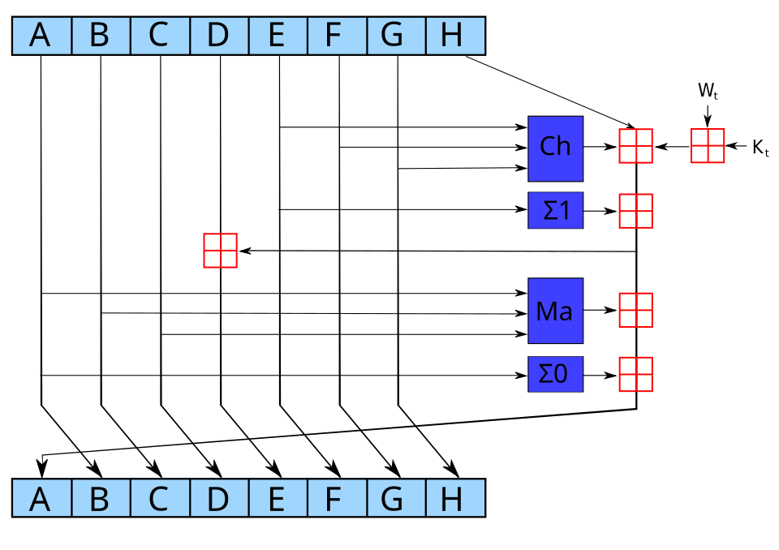
この性質だけでも、「改ざん不可能」までは言えない。言えるのは「改ざんを検出できる」という弱いが重要な主張である。ブロックヘッダが直前ブロックのハッシュを含めば、過去を1バイト書き換えれば以降のハッシュが連鎖的に食い違う。検出は安い。しかし検出しやすいだけで、攻撃者が新しい整合した鎖を作り直すのを止めはしない——そこには後でコストが要る。
混同しやすいのはここだ。指紋があることと、指紋を偽造するコストが高いことは違う。書類のハッシュを公開すれば改ざんは見えるが、攻撃者が全文書を用意し直して新しいハッシュを提示することは原理的にできる。Bitcoinがさらに必要とするのは、新しい整合履歴を作ること自体が高くつくこと——Proof-of-Workである。
したがって「ブロックチェーン＝改ざん不可能」は口号としては短すぎる。正しくは「ハッシュで結合された履歴は改ざんを検出しやすく、その上に十分な累積作業量が積まれ、かつ検証者が規則を執行していれば、書き換えは高価である」だ。条件が増えるほど嘘は減る。
秘密鍵：名簿のない所有
Bitcoinは世界共通の氏名台帳を前提にしたくない。それでも「この残高を動かしてよいのは鍵の持ち主だけ」と言いたい。そこで公開鍵暗号の署名が入る。秘密鍵から公開鍵を導き、さらにハッシュしてアドレス（例: bc1...）として流通させる。アドレスは「Alice」という人名ではなく、支払い条件のハッシュである(*3)。ネットワークは人物を知らない。署名を検証するだけである。
この単純さが、日常の不安を生む。鍵を持つ者が主権を持つ——第三者の許可なく使える。鍵を失う・盗まれると、プロトコル上の救済当局はいない。銀行の「本人確認して復元」は、プロトコル外の社会的手当である。
取引所に資産を預けているとき、画面の残高はしばしば内部帳簿の IOU である。取引所が破綻・ハッキング・出金停止をしたら、画面の数字は紙切れになりうる。救済がない代わりに、第三者にも止められない——これが主権の両面である。自己保管は「技術オタクの趣味」ではなく、どの委任層に立つかの明示的な選択である。
残高は口座ではなく、未使用の出力の束である
口座残高モデルは直感的だが、更新順序の合意に中央性が入りやすい。Bitcoinは状態を未使用トランザクションアウトプット（UTXO）の集合として持つ(*3)(*2)。各UTXOは過去の取引の出力スロットであり、一度入力として消費されたら二度と使えない。ウォレットの「残高 1.42 BTC」は、使えるUTXOの合計という便利な集計に過ぎない。原子単位は口座行ではなくUTXOである。
支払いの骨格は、お茶を買うときの紙幣とお釣りに似ている。
- 既存UTXOを入力として参照し、消費する
- 新しいUTXOを出力として作成する
- 入力額の合計 ≥ 出力額の合計。差額は手数料
- 各入力に消費権限の証明（署名）を付ける
次の限界はスケールである。有効取引を世界が一本ずつ高コストで「石に刻む」のは重い。取引を束ね、包含を要約するブロックが要る。
ブロックと Merkle 根：履歴を束ね、包含を軽く証明する
取引ごとに独立の高コスト証明を要求すると、同期と検証が破綻する。代わりに、ブロックはコンパクトなヘッダ（約80バイト）と可変長の取引本体からなる(*2)。Proof-of-Work が計算する対象は主にこの80バイトのヘッダである。取引群は Merkle 根を経由してヘッダに拘束される。追加の取引は、Merkle 木の祖先だけを再計算すればよく、ヘッダ全体を一から書き直す必要はない。
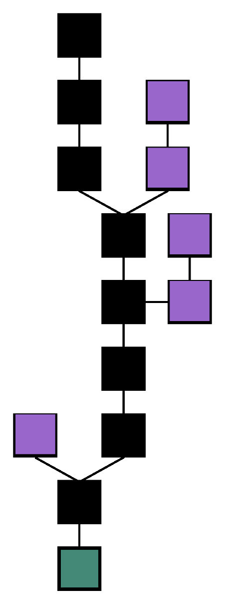
| ヘッダの字段 | 役割 |
|---|---|
| prevBlockHash | 直前ブロックヘッダのハッシュ（鎖の糊） |
| merkleRoot | 当ブロック内全取引の Merkle 根 |
| bits / nonce | 難易度目標と PoW 探索用カウンタ |
| nTime | タイムスタンプ（難易度調整の材料にもなる） |
Root = H(H(AB) ‖ H(CD))
/ \
H(AB) H(CD)
/ \ / \
H(A) H(B) H(C) H(D)
Bobが取引Bだけ知りたいとき、Merkle proof として兄弟ハッシュを数個受け取り、根を再計算してヘッダの merkleRoot と照合できる。大きなブロック全体をダウンロードしなくても、包含の主張を安く検証できる——ただし、これはコンセンサスルール全体の検証と同じではない。
THE TIMES
Saturday January 3 2009 · coinbase へ刻まれた公開文字列の再構成
Chancellor on brink of second bailout for banks
Bitcoin の genesis ブロック（block 0）のコインベースには、この日のロンドン紙見出しが ASCII として埋め込まれている。公開ブロックデータから確認できる時刻アンカーであり、同時に2008–09年の金融危機という文脈の刻印でもある(*7)。
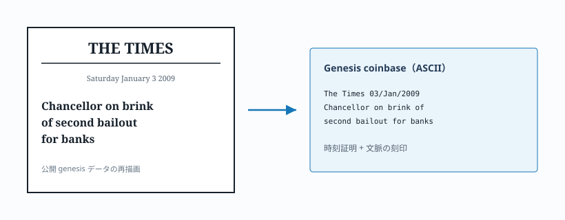
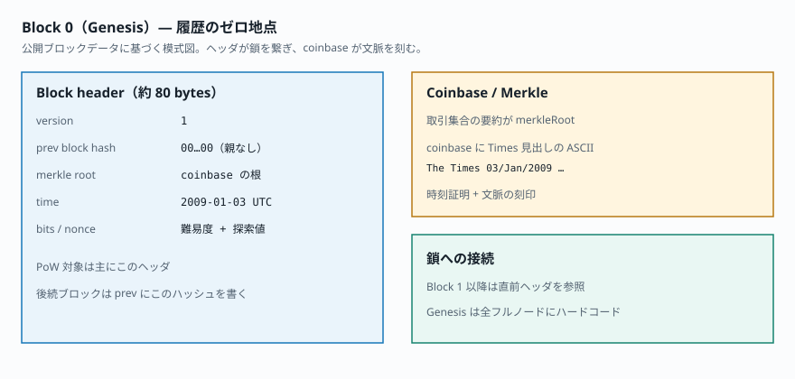
SPV の便利さは本物だが、それは検証の全体ではない。次の節で、包含と規則執行の切れ目を操作して確かめる。
検証の範囲：包含の証明は、規則の執行ではない
Merkle proof は魅力的だ。ヘッダと数本の兄弟ハッシュだけで「この取引はあのブロックに入っている」と主張できる。携帯電話のウォレットの多くが近似的にやっているのもこれ——いわゆる SPV（Simplified Payment Verification）である(*1)。
しかし包含の証明は、コンセンサスルール全体の検証と同じではない。ヘッダ鎖と Merkle proof は「どこかに載った」ことの安い証拠になりうるが、そのブロックが金額保存・二重支払い禁止・コインベース上限など全規則を満たしているかは、フルノードが UTXO 集合まで検証しないと保証できない。宣伝が「改ざん不可能」と言うとき、しばしば話者は自分が検証した範囲を超えて語っている。
ここにもトレードオフがある。全員が常にフルノードを回せるわけではない。委任は悪ではない——どの範囲を自分で見、どこを他人のノードや会社に預けるかを明示できることがリテラシーだ。次の Lab は、同じ偽ブロックを二つの検証者に見せて、見える範囲の差を並べて確かめる。
検証範囲の差を押さえたうえで、まだ開いた問題がある。誰でもヘッダを書いてよいなら、矛盾するブロックは無限に増える。伝播も指紋も包含証明も、提案が無料なら偽身分の洪水に飲まれる——次に必要なのは、追記権への検証可能な値段である。
Proof-of-Work：追記権に、検証可能な値段を付ける
オンラインでは新しい「身分」を作るコストがほぼゼロである。提案が無料なら、攻撃者は矛盾する履歴を量産できる。票＝計算コストにしない限り、多数決は偽身分に飲まれる（Sybil 問題）。
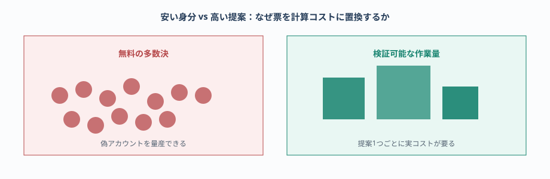
Adam Back の Hashcash は、メール送信者にハッシュ探索を要求する DoS 対策だった。「探索は高く、検証は安い」という非対称性である(*5)。Satoshi はこの発想を、次の正規履歴候補を提案する権利へと再配置した(*1)。
実務上、マイナーはブロックヘッダの nonce などを変えながら二重 SHA-256 を繰り返し、出力が難易度が定める target 未満になるまで探す。見つかったヘッダは誰でも1回のハッシュで検証できる。難しさは、およそ平均試行回数が target の厳しさに比例する、という確率の話である(*2)。
この非対称は、日常生活のたとえに落とすと分かりやすい。宝くじの当たりを引くには何万回も買う必要があるが、当たりくじかどうかの確認は一瞬でできる。BitcoinのPoWは、履歴の次ページを書く権利をその宝くじに結び付ける。ただし普通の宝くじと違い、当たりの検証は誰でも同じ規則ででき、当たりのページが規則違反なら——いくら探索コストを払っても——フルノードは受け取らない。
エネルギー消費への批判は当然生じうる。メンタルモデルとしては、そのエネルギーを「浪費」とだけ見るのではなく、「公開ネットワークで履歴を防衛するための継続課金」として読む必要がある。課金の大小が社会的に妥当かは別議論だが、ゼロコストで同等の公開防衛を得る設計はまだ見つかっていない、というのが少なからぬ研究者の見立てに近い。ここでも価格やモラルを先に結論せず、何のためのコストかを見失わないことが先である。
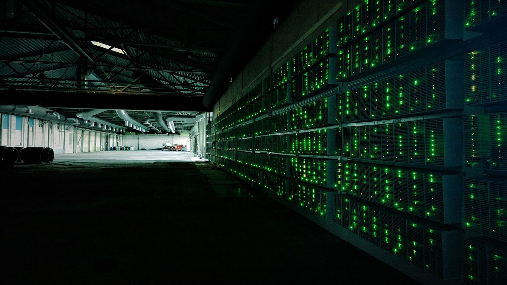
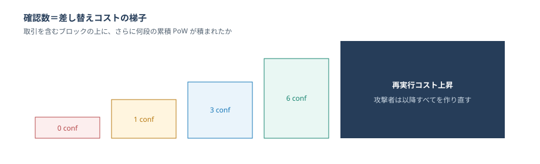
累積作業量：どちらが「本当の履歴」かを選ぶ
同時出塊や伝播遅延で短い分岐（フォーク）は不可避である。確定は、二値の真実ではなく、確率的・コスト的な概念になる。ノードは、コンセンサスルールを満たす鎖のうち、最も累積 Proof-of-Work が大きいものを正規とする。論文の “longest chain” は、実務上 chainwork（累積作業量）として読むのが安全である(*1)(*2)。
ここで日常の「反映済み」が崩れる。ある取引所の画面は、自社の内部台帳を更新した瞬間に緑のチェックを出すかもしれない。しかし相手の商人は、公開鎖の上に何ブロック積まれたかを見ている。前者は委任先の都合、後者は差し替えコストの経験則である。両方とも「BTCが動いた」ように見えて、時計が違う。
再編成（reorg）はバグというより、分散系の通常運転に近い。短い分岐は消え、長い（正確には累積作業量が大きい）枝が残る。高額決済ほど、たまたま短い枝にだけ乗った支払いを最終扱いしない理由がここにある。
それでも、マイナーが作ったから正しい、ではない。規則違反のブロックは、PoWを満たしていても無効である。
フルノード：立法者ではなく、審査官
中央サーバがないなら、誰が無効データを止めるのか。マイナーが「報酬を上限の何倍も載せるコインベース」を組んで PoW に成功させても、ネットワークは従ってはならない。ルールはプロトコルにあり、マイナーは候補の提案者に過ぎない。
フルノードはピアから取引とブロックを受け取るたびに、ローカルのコンセンサスルールで検証する(*4)。拒否されたデータは自分のUTXOセットにも、relay経路にも乗らない。この「各自が同じ規則で棄却する」習慣こそが、立法者不在のシステムの骨格である。
誰がエネルギーを払うのか：補助金、手数料、難易度
検証と探索には資源が要る。なぜ誰かが払うのか。ブロック報酬は補助金（block subsidy）と取引手数料の合計である(*2)。補助金は約210,000ブロック（約4年）ごとに半減する。半減は供給スケジュールのイベントであり、そのままハッシュレートや価格や「安全性」を保証しない。
ブロック容量は有限である。混雑時、マイナーは手数料率（sat/vB）の高い取引を優先する。ユーザーが見ているのは「BTCの値段」だけでなく、ブロック空間の一時市場である。同じ送金でも日によって手数料が違うのは、この入札のためだ。
この分離は実務で強い。BTC/USD が同じでも、mempools が混めば手数料は跳ねる。逆に静かな時間帯なら安く入る。支払者が買っているのはコインそのものではなく、限られた次のブロック枠への優先権でもある。料金が「高い・安い」と感じる前に、何の市場かを見る癖がメンタルモデルになる。
半減についても同様の分離が要る。補助金スケジュールは供給側の機械的な出来事である。それが需要・価格・ハッシュレートにどう波及するかは市場とインセンティブの相互作用であり、プロトコルが保証する命題ではない。「半減したから上がる」は物語になりやすく、設計説明としては短すぎる。
難易度はおよそ2週間（2,016ブロック）ごとに調整され、出塊の時間リズムを保とうとする(*6)(*2)。ハッシュレートが増えても、平均10分という鼓動を無理に速めない——むしろ探索をより難しくする。ここでの「セキュリティ」は、防衛に支払われている資源フローの別名に近い。補助金が減るほど、長期的には手数料市場がその予算をどれだけ支えるかが論点になる。それは価格予測ではなく、インセンティブ設計の読み方である。
Bitcoinが解かない問題と、よくある誤解
良いメンタルモデルは、システムが得意なことと同じくらい、苦手なことを明確にする。Bitcoinは二重支払いを公開コストで抑える電子現金の設計であって、すべての社会問題の万能薬ではない。
| 領域 | 限界の根拠 |
|---|---|
| 価格 | 約2100万枚の供給上限は供給側の制約。需要と為替は市場（プロトコル外） |
| 価値保存の成績 | 発行・改訂の検証可能性はプロトコル内。購買力の将来結果は需要・制度・競合資産に依存 |
| 完全匿名 | 取引は公開台帳。連鎖分析で追跡されうる |
| 無限スループット | オンチェーン容量は意図的に制約される |
| 鍵の社会的回復 | シード喪失の救済はプロトコル外 |
| 消費者保護 | チャージバック前提の決済法制とは設計思想が異なる |
| エネルギーゼロ | PoWのコストは履歴防衛の対価として設計されている |
- 「ブロックチェーンと書けば改ざん不可能」→ 累積PoWと受理規則に条件付き
- 「マイナーがすべてを決める」→ 無効ブロックはフルノードが拒否する(*4)
- 「取引所の残高＝自分のBitcoin」→ 鍵制御が本義（多くはIOU）
- 「半減期＝必ず稀少性バブル」→ 供給スケジュールの話であって価格の法則ではない
- 「法定通貨が滅びるからBitcoinが要る」→ 本稿の主張は交換手段の否定ではなく、検証可能な供給制約という選択肢の追加
あなたは今、鍵・台帳・確認のどこに立っているか
抽象は、動いているときは無視できるように設計される。それ自体は悪いことではない。問題は、壊れたときや、高額を動かすとき、自分がどの層に立っているかを見失うことだ。
自己保管するなら、BTCを買う前に鍵運用と検証方針を設計する。高額決済なら、取引所の「反映済み」を相手の確定基準と混同しない。コーヒー1杯と不動産売買では、許容する委任と確認の深さが違う。そして説明責任として——「累積PoWがこの程度まで積まれ、自分はこのノードで規則を検証した（または検証を誰に委任した）」と言えるかどうか。
読み終えたあとに残すべきなのは、相場観ではない。「自分が今、権限（鍵）・状態（UTXO）・コスト（確認）・検証（ノード）のどこに立っているか」を一文で言えることである。
Everyday phenomena の回収
| 感じる現象 | なぜそう感じるか |
|---|---|
| 送金した直後、相手と自分の画面が食い違う | P2P伝播の途上でローカル視野が一時的に割れる |
| 取引所の「反映済み」と相手の「確定」がずれる | 内部帳簿と累積PoW上の確認は別時計 |
| 軽いウォレットは通るがフルノードは拒む | SPVは包含、フルノードは規則まで見る |
| 手数料が日によって違う | ブロック空間の入札市場 |
| 「6確認を待て」と言われる | 差し替えに要する累積作業量の経験則 |
| シードをなくすと誰も戻せない | 秘密鍵＝主権。救済当局なし |
| 半減期が騒ぎになる | 補助金スケジュール≠安全保障そのもの |
| インフレ懸念でBitcoinの話になる | 価値保存の性質（検証可能な供給）と相場の成績は別時計 |
| 「改ざん不可能」と聞いても不安が残る | 条件付きの累積コスト＋自分の検証範囲 |
Faza のソフトウェア論が言うように、理解できるものだけが制御できる。Bitcoinでも同じである。価格アプリの数字を眺めることと、自分がどの委任構造の上に立っているかを説明できることは、別のリテラシーだ。AIが要約や送金手順を提案する時代でも、最終的に検証すべきなのはモデル——署名、UTXO、累積作業量、フルノード——のどれが自分の手元にあるかである。
この記事が目指したのは、用語辞典ではなく、世界の見え方が一段変わる足場である。価値保存が歴史上なにを要求してきたか、コピーが無料でも希少性を強制できること、伝播遅延があっても最終的に順序を共有できること、作業量が見えるコストであること、検証範囲を自分の言葉で言えること——それができれば、十分に遠くまで歩いたことになる。
出典
- Satoshi Nakamoto, Bitcoin: A Peer-to-Peer Electronic Cash System, 2008. bitcoin.org/bitcoin.pdf
- Bitcoin.org, Developer Guide — Block Chain. developer.bitcoin.org/devguide/block_chain.html
- Bitcoin.org, Developer Guide — Transactions. developer.bitcoin.org/devguide/transactions.html
- Bitcoin.org, Developer Guide — P2P Network. developer.bitcoin.org/devguide/p2p_network.html
- Adam Back, Hashcash - A Denial of Service Counter-Measure, 2002. hashcash.org/papers/hashcash.pdf
- Bitcoin Wiki, Difficulty. en.bitcoin.it/wiki/Difficulty
- Bitcoin Wiki, Genesis block. en.bitcoin.it/wiki/Genesis_block
- Wei Dai, b-money, 1998. weidai.com/bmoney.txt
- 画像: David Shankbone, Lehman Brothers Times Square (Wikimedia Commons, CC BY 3.0); Bank of England / NYSE / mining farm / SHA-2 / blockchain diagrams via Wikimedia Commons（各ファイルのライセンス表記に従う）。
- Michael McLeay, Amar Radia, Ryland Thomas, Money in the modern economy: an introduction, Bank of England Quarterly Bulletin, 2014 Q1. bankofengland.co.uk/…/money-in-the-modern-economy-an-introduction
- Nick Szabo, Shelling Out: The Origins of Money, 2002. nakamotoinstitute.org/library/shelling-out/
- Sandra Kollen Ghizoni, Nixon Ends Convertibility of U.S. Dollars to Gold and Announces Wage/Price Controls, Federal Reserve History, 2013. federalreservehistory.org/essays/gold-convertibility-ends
注: 本稿の Lab は教育用の簡略モデルであり、実ネットワークの暗号・難易度・伝播・手数料市場をシミュレートするものではない。過程の直観を作るための玩具である。